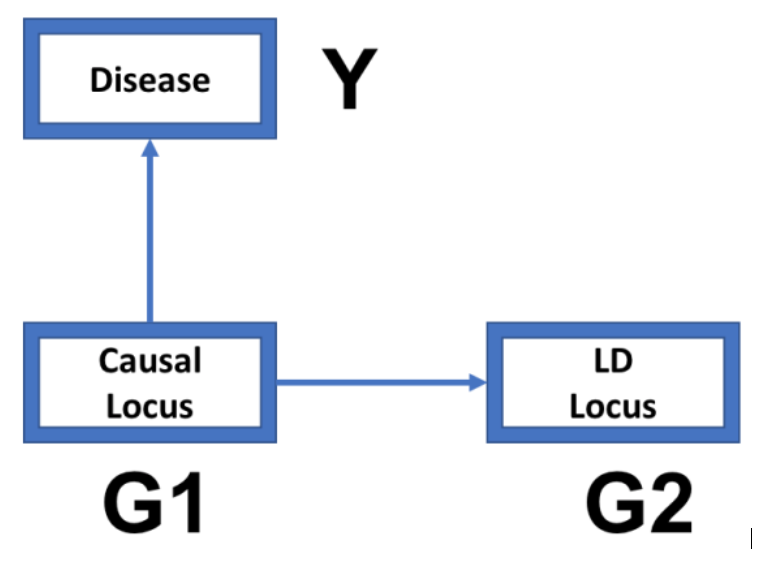

Suppose disease locus (alleles D and d) and LD locus (alleles A and a) with Pr(A|D) = 0.9, Pr(A|d) = 0.2 and f (D) = 0.4. Calculate allele distribution of LD locus (i.e. f (A) =? And f (a) =?)
f(A) = f(A,D) + f(A,d) = Pr(A|D)f(D) + Pr(A|d)f(d)
f(D) = 0.4 \(=>\) f(d) = 0.6
Pr(A|D) = 0.9, Pr(A|d) = 0.2
f(A) = \(0.9*0.4 + 0.2*0.6 = 0.48\)
f(a) = 1 - f(A) = 1 - 0.48 = 0.52
a. set Pr(A|D)=p1, Pr(A|d)=p2 and f(D)=q, write down the inference formula for LD allele frequencies (i.e. f(A) and f(a)), based on parameters of p1, p2 and q (score 15)
f(A) = f(A,D) + f(A,d) = Pr(A|D)f(D) + Pr(A|d)f(d)
f(D) = q \(=>\) f(d) = 1-q
f(A) = \(p_1*q + p_2*(1-q)\)
f(a) = 1 - f(A) = \(1 - p_1*q - p_2*(1-q)\)
b. Extra credit: implements getAlleleFreq function using the template of lecture slide (score 5)
getAlleleFreq <- function(p1,p2,q){
fA = p1*q + p2*(1-q)
fa = 1 - fA
return(c(fA=fA,fa=fa))
}getAlleleFreq(0.9,0.2,0.4)## fA fa
## 0.48 0.52Suppose disease locus (alleles D and d) and LD locus (alleles A and a) with Pr(A|D) = 0.9, Pr(A|d) = 0.2 and f (D) = 0.4.
a. Construct contingency table for the joint genotype distribution of disease and LD locus (score 25)
\(Pr(DD) = 0.4*0.4 = 0.16\)
\(Pr(Dd) = 2*0.4*0.6 = 0.48\)
\(Pr(dd) = 0.6*0.6 = 0.36\)
\(Pr(a|D) = 1 - Pr(A|D) = 1 - 0.9 = 0.1\)
\(Pr(a|d) = 1 - Pr(A|d) = 1 - 0.2 = 0.8\)
\(Pr(AA,DD) = Pr(AA|DD)Pr(DD) = Pr(A|D)^2Pr(DD) = 0.9^2*0.16 = 0.1296\)
\(Pr(AA,Dd) = Pr(AA,D_md_f) + Pr(AA,D_fd_m)\)
\(= Pr(AA|D_md_f)Pr(D_md_f) + Pr(AA|D_fd_m)Pr(D_fd_m)\)
\(= Pr(A|D_m)Pr(A|d_f)Pr(D_md_f) + Pr(A|D_f)Pr(A|d_m)Pr(D_fd_m)\)
\(= Pr(A|D)Pr(A|d)Pr(D_md_f) + Pr(A|D)Pr(A|d)Pr(D_fd_m)\)
\(= Pr(A|D)Pr(A|d)[Pr(D_md_f) + Pr(D_fd_m)]\)
\(= Pr(A|D)Pr(A|d)Pr(Dd)\)
\(= 0.9*0.2*0.48 = 0.0864\)
\(Pr(AA,dd) = Pr(AA|dd)Pr(dd) = Pr(A|d)^2Pr(dd) = 0.2^2*0.36 = 0.0144\)
\(Pr(Aa,DD) = Pr(A_ma_f,DD) + Pr(A_fa_m,DD)\)
\(= Pr(A_ma_f|DD)Pr(DD) + Pr(A_fa_m|DD)Pr(DD)\)
\(= Pr(A_m|D)Pr(a_f|D)Pr(DD) + Pr(A_f|D)Pr(a_m|D)Pr(DD)\)
\(= Pr(A|D)Pr(a|D)Pr(DD) + Pr(A|D)Pr(a|D)Pr(DD)\)
\(= 2Pr(A|D)Pr(a|D)Pr(DD)\)
\(= 2*0.9*0.1*0.16 = 0.0288\)
\(Pr(Aa,Dd) = Pr(A_ma_f,D_md_f) + Pr(A_ma_f,D_fd_m) + Pr(A_fa_m,D_md_f) + Pr(A_fa_m,D_fd_m)\)
\(= Pr(A_ma_f|D_md_f)Pr(D_md_f) + Pr(A_ma_f|D_fd_m)Pr(D_fd_m) + Pr(A_fa_m|D_md_f)Pr(D_md_f) + Pr(A_fa_m|D_fd_m)Pr(D_fd_m)\)
\(= Pr(A_m|D_m)Pr(a_f|d_f)Pr(D_md_f) + Pr(A_m|d_m)Pr(a_f|D_f)Pr(D_fd_m) + Pr(A_f|d_f)Pr(a_m|D_m)Pr(D_md_f) + Pr(A_f|D_f)Pr(a_m|d_m)Pr(D_fd_m)\)
\(= Pr(A|D)Pr(a|d)Pr(D_md_f) + Pr(A|d)Pr(a|D)Pr(D_fd_m) + Pr(A|d)Pr(a|D)Pr(D_md_f) + Pr(A|D)Pr(a|d)Pr(D_fd_m)\)
\(= Pr(A|D)Pr(a|d)[Pr(D_md_f)+Pr(D_fd_m)] + Pr(A|d)Pr(a|D)[Pr(D_fd_m)+Pr(D_md_f)]\)
\(= Pr(A|D)Pr(a|d)Pr(Dd) + Pr(A|d)Pr(a|D)Pr(Dd)\)
\(= 0.9*0.8*0.48+0.2*0.1*0.48 = 0.3552\)
\(Pr(Aa,dd) = Pr(A_ma_f,dd) + Pr(A_fa_m,dd)\)
\(= Pr(A_ma_f|dd)Pr(dd) + Pr(A_fa_m|dd)Pr(dd)\)
\(= Pr(A_m|d)Pr(a_f|d)Pr(dd) + Pr(A_f|d)Pr(a_m|d)Pr(dd)\)
\(= Pr(A|d)Pr(a|d)Pr(dd) + Pr(A|d)Pr(a|d)Pr(dd)\)
\(= 2Pr(A|d)Pr(a|d)Pr(dd)\)
\(= 2*0.2*0.8*0.36 = 0.1152\)
\(Pr(aa,DD) = Pr(aa|DD)Pr(DD) = Pr(a|D)^2Pr(DD)\)
\(= 0.1^2*0.16 = 0.0016\)
\(Pr(aa,Dd) = Pr(aa,D_md_f) + Pr(aa,D_fd_m)\)
\(= Pr(aa|D_md_f)Pr(D_md_f) + Pr(aa|D_fd_m)Pr(D_fd_m)\)
\(= Pr(a|D_m)Pr(a|d_f)Pr(D_md_f) + Pr(a|D_f)Pr(a|d_m)Pr(D_fd_m)\)
\(= Pr(a|D)Pr(a|d)Pr(D_md_f) + Pr(a|D)Pr(a|d)Pr(D_fd_m)\)
\(= Pr(a|D)Pr(a|d)[Pr(D_md_f)+Pr(D_fd_m)]\)
\(= Pr(a|D)Pr(a|d)Pr(Dd)\)
\(= 0.1*0.8*0.48 = 0.0384\)
\(Pr(aa,dd) = Pr(aa|dd)Pr(dd) = Pr(a|d)^2Pr(dd)\)
\(= 0.8^2*0.36 = 0.2304\)
| ``` | AA | Aa | aa |
|---|---|---|---|
| DD | 0.1296 | 0.0288 | 0.0016 |
| Dd | 0.0864 | 0.3552 | 0.0384 |
| dd | 0.0144 | 0.1152 | 0.2304 |
b. Calculate genotype distribution of the LD locus (i.e. f(AA), f(Aa) and f(aa)), based on the contingency table (score 10)
\(Pr(AA) = Pr(AA,DD) + Pr(AA,Dd) + Pr(AA,dd)\)
\(= 0.1296 + 0.0864 + 0.0144 = 0.2304\)
\(Pr(Aa) = Pr(Aa,DD) + Pr(Aa,Dd) + Pr(Aa,dd)\)
\(= 0.0288 + 0.3552 + 0.1152 = 0.4992\)
\(Pr(aa) = Pr(aa,DD) + Pr(aa,Dd) + Pr(aa,dd)\)
\(= 0.0016 + 0.0384 + 0.2304 = 0.2704\)
c. Is LD locus in HWE? (score 10)
Yes. Because \(Pr(AA) = Pr(A)^2, Pr(Aa) = 2Pr(A)Pr(a), Pr(aa) = Pr(a)^2\)
d. set Pr(A|D)=p1, Pr(A|d)=p2 and f(D)=q, write down the inference formula for LD genotype frequencies (i.e. f(AA), f(Aa) and f(aa)), based on parameters of p1, p2 and q. (score 10)
\(Pr(AA) = Pr(AA,DD) + Pr(AA,Dd) + Pr(AA,dd)\)
\(= Pr(AA|DD)Pr(DD) + Pr(AA|Dd)Pr(Dd) + Pr(AA|dd)Pr(dd)\)
\(= Pr(A|D)^2Pr(DD) + Pr(A|D)Pr(A|d)Pr(Dd) + Pr(A|d)^2Pr(dd)\)
\(= p_1^2q^2 + p_1p_22q(1-q) + p_2^2(1-q)^2\)
\(Pr(Aa) = Pr(Aa,DD) + Pr(Aa,Dd) + Pr(Aa,dd)\)
\(= Pr(Aa|DD)Pr(DD) + Pr(Aa|Dd)Pr(Dd) + Pr(Aa|dd)Pr(dd)\)
\(= 2Pr(A|D)Pr(a|D)Pr(DD) + Pr(Dd)[Pr(A|D)Pr(a|d) + Pr(A|d)Pr(a|D] + 2Pr(A|d)Pr(a|d)Pr(dd)\)
\(= 2p_1(1-p_1)q^2 + 2q(1-q)[p_1(1-p_2)+p_2(1-p_1)] + 2p_2(1-p_2)(1-q)^2\)
\(Pr(aa) = Pr(aa,DD) + Pr(aa,Dd) + Pr(aa,dd)\)
\(= Pr(aa|DD)Pr(DD) + Pr(aa|Dd)Pr(Dd) + Pr(aa|dd)Pr(dd)\)
\(= Pr(a|D)^2Pr(DD) + Pr(a|D)Pr(a|d)Pr(Dd) + Pr(a|d)^2Pr(dd)\)
\(= (1-p_1)^2q^2 + (1-p_1)(1-p_2)2q(1-q) + (1-p_2)^2(1-q)^2\)
e. Extra credit: implements getGenotypeFreq function using the template of lecture slide (score 10)
getGenotypeFreq <- function(p1,p2,q){
fAA = (p1^2)*(q^2) + p1*p2*2*q*(1-q) + (p2^2)*((1-q)^2)
fAa = 2*p1*(1-p1)*(q^2) + 2*q*(1-q)*(p1*(1-p2)+p2*(1-p1)) + 2*p2*(1-p2)*((1-q)^2)
faa = ((1-p1)^2)*(q^2) + (1-p1)*(1-p2)*2*q*(1-q) + ((1-p2)^2)*((1-q)^2)
return(c(fAA=fAA,fAa=fAa, faa = faa))
}
getGenotypeFreq(0.9,0.2,0.4)## fAA fAa faa
## 0.2304 0.4992 0.2704Suppose disease locus (alleles D and d) and LD locus (alleles A and a) with Pr(A|D) = 0.9, Pr(A|d) = 0.2 and f (D) = 0.4. If penetrance of disease locus G1 is: Pr(Y = 1|G1 = DD) = 0.8, Pr(Y = 1|G1 = Dd) = 0.4, and Pr(Y = 1|G1 = dd) = 0.2, what the penetrance of LD locus G2 will be? (score 30)

\(Pr(Y|G_2=AA) = Pr(Y|G_2=Aa) = Pr(Y|G_2=aa) = Pr(Y)\) Due to \(G_2\) is independent with Y.
\(Pr(DD) = Pr(D)^2 = 0.4^2 = 0.16\)
\(Pr(Dd) = 2Pr(D)Pr(d) = 2*0.4*0.6 = 0.48\)
\(Pr(dd) = Pr(d)^2 = 0.6^2 = 0.36\)
\(Pr(Y=1) = Pr(Y=1, G_1=DD)+Pr(Y=1, G_1=Dd)+Pr(Y=1, G_1=dd)\)
\(= Pr(Y=1|DD)Pr(DD)+Pr(Y=1|Dd)Pr(Dd)+Pr(Y=1|dd)Pr(dd)\)
\(= 0.8*0.16 + 0.4*0.48 + 0.2*0.36 = 0.392\)
\(Pr(Y=0) = Pr(Y=0, G_1=DD)+Pr(Y=0, G_1=Dd)+Pr(Y=0, G_1=dd)\)
\(= Pr(Y=0|DD)Pr(DD)+Pr(Y=0|Dd)Pr(Dd)+Pr(Y=0|dd)Pr(dd)\)
\(= [1-Pr(Y=1|DD)]Pr(DD)+[1-Pr(Y=1|Dd)]Pr(Dd)+[1-Pr(Y=1|dd)]Pr(dd)\)
\(= (1-0.8)*0.16 + (1-0.4)*0.48 + (1-0.2)*0.36 = 0.608\)